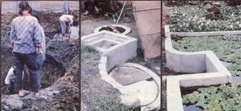

MOTHER's recent tour to China brings us this report on one of that nation's solutions to some of its health, food, and energy problems.
The People's Republic of China, with its vast territory and sizable rural population, has long been plagued with a shortage of energy. And since the use of modern equipment has lately become more prevalent-because the Asian land has started to develop its decentralized, nonurban regions-this fuel deficit would certainly have worsened, had it not been for some farsighted planning on the part of China's citizenry.
The Oriental experimenters have dis covered, you see, that biogas (the volatile fuel that results from the controlled fer mentation of organic waste material) can be a very practical substitute for the more conventional sources of energy, which people in many sections of rural China find difficult to obtain. Furthermore, a number of waste disposal, health, fertilizer supply, and other problems that are not directly energy-related have also been alleviated by the implementation of local methane production programs!
THREE WITH ONE BLOW
The Chinese have been experimenting with biogas made from farm and house hold waste for nearly 30 years . . . undergoing a self-education process based upon the country's long-standing tradition of composting all available human, animal, vegetable, and crop refuse to make organic fertilizer. Within the last decade, however, the results of that research have been put to good use ... and there are now about seven million small-scale fuelproducing methane plants in operation throughout China, many of them within the Sichuan Province, which is located in the nation's southeastern region.
Understandably enough, the switch to biogas energy has had an enormous impact on the economic growth of this rapidly "modernizing" country. In the past, rural inhabitants had to either forage for firewood or purchase coal or charcoal to satisfy their cooking needs. These practices not only stripped the countryside of forests (and the fields of organic residue), but also put a strain on mining and transportation facilities ... and were highly labor-intensive.
From an agricultural standpoint, the production of methane fuel also makes a lot of sense. Obviously, there's only a shortterm gain to be realized by burning crop residues for fuel, but the closed fermentation process typically used in biogas "pits" allows the full potential of cull and waste material to be seen.
The official figures for various Sichuanbased methane plants show that the ammonia content of an organic fertilizer mix which has been fermented for 30 days in an enclosed digester is increased by over 19%, while reports from other provinces indicate that gains of up to 160% are possible ... as opposed to outright losses of 82%-by way of evaporation-of the same kind of raw material's potential ammonia when it's left in compost piles. The usable phosphate content of the "biogassed" waste also showed an improvement: 31% over that of conventionally composted mixtures.
Furthermore, when the digested organic fertilizers were applied to existing fields (both the liquid effluent and dried sludge forms were used), crop yields rose noticeably, ranging from an average rice harvest increase of 7.8% to a 15.2% net gain in wheat production!
Perhaps even more significant, though-especially in view of the lack of information available in our own country on the subjectis the Chinese attitude toward human waste and its role in the ecological cycle. Naturally, owing to the fact that no less than 16 different pathogenic bacteria can be present in human excrement, the disposal of such material must be handled cautiously. The careless dispersal of raw sewage (and even of treated matter that hasn't had adequate time to "detoxify") often results in the spread of infectious disease.
However, if properly processed, human waste can be of great benefit to the soil ... and-in some regions of rural China, where sanitary facilities have generally been primitive, at best-a conscientious program of feces disposal in conjunction with biogas manufacture has proved to be the answer not only to energy and fertilizer shortages, but to many community health problems as well.
Sichuan scientists have proved repeatedly that a conglomerate of human and animal wastes contains, after a four-week or longer anaerobic digestion period, from 90 to 99% fewer parasite eggs than untreated manure does. A great number of harmful pathogens are destroyed in a matter of hours after the material enters the biogas pits, but the more tenacious parasites (including hookworms, tapeworms, and Schistosoma) endure for extended intervals . .. and it's only by means of the relatively high-temperature (85° to 104°F), airless environment of a methane generator that such undesirable organisms are eliminated, allowing the spent "slurry" material to be safely spread on fields used for the production of edibles.
HIGHLY FUNCTIONAL . . .
Naturally, no one specific biogas plant plan is used throughout China . . . and, by the same token, even those of similar design must be modified to fit the terrain and soil type of the area in which they're used. Whether the methane plant serves a rural household of several people or a commune of several hundred, it is constructed with a number of important criteria in mind.
First, the plant is invariably located in the ground, which [1] saves valuable farmland, [2] provides thermal insulation both to promote digestion of the manure substrate and to discourage the cracking that can result from swings in temperature, [3] allows the substratum soil to serve as a structural aid, and [4] takes advantage of gravity to assure trouble-free feeding.
Site selection is also carefully considered. Ideally, a pit is located near a family's living quarters (especially in the case of the household-sized digester) so the latrine can be situated fairly close to the house . . . but at the same time, the unit should also be near-or in some cases under-the pigsty, to provide convenient manure loading. (The floors of such stalls typically slope into a trough that leads directly to the digester inlet, permitting the waste to be washed downward daily.)
Other site considerations include the need to place the fermenting pit away from an area with trees and large roots . . . and to position it in such a way that the soil above the chamber will receive sunlight, to allow the unit to take advantage of direct solar gain. The composition of the foundation material is also critical, since the presence of expansion clay, mixed soils, ground water, or solid rock could call for the use of a different construction method or relocation of the pit.
Finally, each unit must be sized to handle adequately both the incoming waste and the fuel needs of the family or community that it serves. The Chinese have found that a household with 3 to 7 persons, and perhaps a pig or two, requires a digester of 200- to 425-cubic-foot internal volume, based upon the assumption that each family member uses about ten cubic feet of gas-for cooking and lighting-per day and that the daily yield of fuel from a typical small-scale pit digester is approximately 15% of the volume of the fermenting liquid .
. . . AND COST-EFFECTIVE
In order to cut the cost of constructing the units and to conserve materials, the builders try to use what's available locally when fabricating each pit. Most systems are built by hand . . . and indigenous rock, lime, clay, and homemade brick are incorporatedwhenever possible-to provide structural support or to cement components together. (It's interesting to note that, over the years, Chinese workers have developed a variety of concrete grades made from coal and lime slag, crushed brick and tile, ash, clay, cinder, or sandin short, they use many substances which we would often consider waste-and feel that the resulting construction material compares favorably with the "real thing".)
Normally, a pit is first excavated, and then the digester's masonry "shell" is laid up around a wooden or steel mold. Occasionally, though, the container is cast right in place. In any event, a typical unit consists of a central liquid-manure and gas storage tank, connected to a slanted inlet pipe that extends into the slurry. Opposite this-and separated by a small retaining wallis an outlet vat containing about one-tenth the volume of the main tank, from which effluent fertilizer can be withdrawn through a covered hatch. The gas itself travels along a pipe fastened to a removable cover at the top of the domed tank lid, and is used as needed (a simple water-in-tube manometer is employed to measure internal pressure). At some locations, ponds are built on the area directly over the tank, to seal potential gas leaks, to store solar heat, and to grow aquatic vegetation.
The Chinese digester's simple design maximizes its utility. Because the vat is broader than it is high, it is not likely to interfere with deep ground water supplies . . . is easy to excavate a site for . . . and has more potential for gas production than would a taller unit, because of its greater surface area. Moreover, the steepangled inlet pipe can't clog, and the force of the fresh waste material entering the system stirs up the fermenting matter . . . which helps speed decomposition. Additionally, the position of the outlet chamber allows only "sanitary" effluent to escape, since parasitic eggs and bacteria settle to the bottom of the tank, where they're eventually destroyed. Finally, the cleanout cover allows for the necessary semiannual inspection and manual emptying of the entire vat.
Depending on the size of the digester, the gas produced can be used in a number of ways, which include burning it in lamps for light and in stoves for the preparation of meals. But the product of communal methane plants is often used to feed gasoline or diesel engines which have been inexpensively converted to burn methane . . . either in conjunction with, or as a replacement for, conventional liquid fuels. (In the case of gasoline powerplants, a feed pipe equipped with an adjustable valve is tapped into the carburetor body .. . on diesel engines, a similar arrangement supplies the intake manifold with biogas, which is ignited in the cylinder by a small amount of diesel oil.) Such powerplants usually drive generators which furnish electricity for lights and machinery.
If the example set by the Chinese can be duplicated in other nations-including, perhaps, our own-there seems to be little reason why at least some of the world's poor can't enjoy more freedom from disease, better soil, and partial energy self-sufficiency . . . at almost no cost!
EDITOR'S NOTE: Those interested in detailed information on Chinese methane technology will be pleased to learn that Mother's Bookshelf has copies of A Chinese Biogas Manual . . . which is an English translation of the appropriate how-to material. The book is available for $9.95 plus 95d shipping and handling from Mother's Bookshelf, P.O. Box 70, Hendersonville, North Carolina 28791.
|
 A group of commune members excavate a biogas pit .... A typical Sichuan family digester is compact and allows for periodic cleanouts . . . . Larger methane ""plants""arc sometimes covered with ponds, which are used to culture aquatic vegetation |
|
|